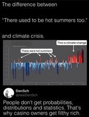

0


0
"AI's decimation of call center jobs has begun," reports Bloomberg:
Companies including the Commonwealth Bank of Australia, Microsoft Corp., Uber Technologies Inc. and Hyatt Hotels Corp. are using automated chat and phone systems to handle work that previously required humans. In some cases, they've already wiped out sizable chunks of their customer service operations, together representing thousands of workers.
The specter of automation has long loomed over the call center industry, which employs millions worldwide from the U,S, to India to the Philippines. But until recently, generative artificial intelligence wasn't good enough to move the needle. Now, AI advancements — and pressure on executives to show they're embracing the new technology — have prompted corporations to deploy the tools more widely. Customer service employment in the U.S. is declining and will likely continue to do so as more tasks are automated, Forrester analyst Kate Leggett wrote in a report earlier this year. While it's impossible to determine the future job losses, she estimated that almost half of customer service roles will be affected by 2030.
Globally, the steepest job cuts are expected to hit countries like the Philippines, where many Western companies have outsourced their most easily automated work. Salespeople at multiple tech companies told Bloomberg that they routinely pitch call center AI tools as a way of lowering labor costs, undercutting a common industry claim that AI is primarily a way to help workers become more productive rather than kill their jobs... Commonwealth Bank of Australia, the nation's largest lender, has shed hundreds of workers from its chat support line as it wove AI into the system, according to people familiar with the work. This amounted to tens of millions of dollars in savings per year, one of the people said...
Microsoft is both one of the largest vendors and adopters of customer service automation tools. This has helped the software giant trim its customer service workforce — a mix of contractors and full-time staff — from about 50,000 to 40,000 in recent years, according to a person familiar with the operations. "If something happened with little Johnny's Xbox in the middle of the night, we can now solve that with AI," Judson Althoff, who runs Microsoft's sales and service operations, said in an interview. Althoff said in April that AI is saving the company about $750 million per year in customer service costs. More complex problems still require human support, but the company is constantly expanding what can be fixed automatically, he said in the interview.
Two examples from the article:
Last year Hyatt fired 30% of its in-house customer support staff for the Americas, according the hotel-industry news site Hotel Dive.
Last week Bloomberg reported Uber had cut 10% of its customer service jobs as part of effort to "embrace artificial intelligence," according to the article. "Today, Uber pushes users to submit support requests through their apps, where they're met with an AI chatbot."
Read more of this story at Slashdot.
Even as Hollywood performers protest and Hollywood studios sue "in their war on AI," reports the Los Angeles Times, "the entertainment industry is deepening its dependence on it."
Among hundreds of job postings in late June, more than one in 10 was likely connected to AI. The top studios' public postings suggest they have been recruiting people to build AI tools. They are also recruiting teams to defend their intellectual property against unauthorized AI use. "There are plenty of studios that are hiring [for AI] but never talk about it in public," said Yoland Yan, a co-founder of ComfyUI, a company that helps studios juggle different AI tools. Companies have been hesitant to detail how they use generative AI in film production — partly because they are concerned about consumer and union backlash. Some in Hollywood described AI use as the new cosmetic surgery, where everyone knows it is happening, but few will admit to it...
Although some companies may be shy about sharing their AI plans, big stars who don't have to answer to others have been more open about their embrace of the new technology for storytelling. Rejecting AI is like picking a horse and buggy over a car, said "Star Wars" creator George Lucas. "Artificial intelligence means it's much easier for us to make movies," he told a trade magazine earlier this year. "There's nothing you can do about it. That's progress. It's the future." Some in Hollywood have a softer stance on artificial intelligence, with studios cutting deals with AI companies, and filmmakers like Martin Scorsese backing AI companies. Ben Affleck launched an AI film tech company then sold it to Netflix for half a billion dollars. When launching InterPositive, Affleck said he wanted to keep "storytelling human" by building AI tools that could fix lighting, generate missing shots and other things while "keeping creative decisions in the hands of artists...."
Disney, Netflix and Amazon had job postings that were about using AI on the creative side of the business. Universal, Paramount, Warner Bros. and Sony had job ads suggesting they were also using AI but for marketing, distribution and audience analytics. The postings suggest the Disney, Netflix and Amazon studios are building repeatable AI workflows for visual effects, animation, sound and dubbing. The companies also seem to be building in-house teams to develop custom generative-AI models, while also using third-party software.
None of the jobs advertised were to create AI that wrote scripts or created AI actors.
Ironically, the Times used Claude Code to build a scraper to identify the job postings, their article acknowledges.
Three Disney jobs were for "content security," assessing AI tools and guarding against piracy, watermarking and rights-protection work. But Disney is also hiring PhD-level talent "to study 'computer graphics and AI' for Pixar and Disney films," according to the article, and "people to 'bridge the gap between research and practical studio application.'"
Disney-owned visual effects shops Industrial Light & Magic "was searching for supervisors to 'explore emerging technologies (including AI/Machine Learning)' to develop new production workflows."
Audio post-production unit Skywalker Sound "seemed to be recruiting to build proprietary AI models for soundtracks, voice separation, and voice transfer, the process of taking a speaker's tone and pitch, and applying it to new content."
Amazon "was hiring a principal AI executive to drive AI-tool adoption across production, plus roles in operations automation and LLM content classification."
Read more of this story at Slashdot.
A woman found her police officer ex-boyfriend cop had used Flock's camera system 600 times to look up the location of her and her daughter, reports the Washington Post (Alternate URL here). (She found out through Have I Been Flocked, described as "a website that aggregates police search logs made available through public records.")
But it turns out dozens more police officers have also misused Flock...
Authorities have charged or accused at least 50 law-enforcement officers of using license-plate readers for unauthorized purposes, including to stalk women without their knowledge or consent, a Post analysis of police and court records found. In 26 of these cases, police investigators and prosecutors said the officers used the technology to spy on their wives, their girlfriends, their exes, their exes' new partners or women they wanted to meet. In other cases, police or prosecutors have not specified the alleged surveillance targets. Flock's system was used in 46 of the cases analyzed by The Post, while the other cases involved competing products...
After The Post relayed its findings to Flock, the company said in a statement it "will soon be announcing better filters and tools to stop abuse before it happens...." In April, the company rolled out a new voluntary "audit assistance" feature, which agencies can choose to enable, that automatically scans officers' searches for suspicious activity, such as queries repeatedly targeting the same vehicle or run by officers off the clock. In an interview with The Post, Flock chief executive Garrett Langley said misuse of its systems is inevitable and that the company is focused on providing tools to catch perpetrators after the fact... "We're not going to change humans, and humans make bad decisions," Langley said. "What we can do is make sure that they know if you use this tool, you will be held accountable...."
Through automated license-plate reader systems, or ALPRs, officers could trace the rhythms and travels of their subjects' daily lives, leading in some instances to violent confrontations, moments of psychological manipulation, and threats of coercion and control, the analysis found.
- In Wisconsin, a police officer allegedly used Flock to check whether his ex-girlfriend had gone to an abortion clinic, according to a police affidavit for a case set for trial this month.
- In Kansas, a police chief who tracked his ex through Flock sneaked up on her while she was intimate with another man, a state police certification body alleged, leading to his firing.
- In Florida, a deputy speeding to stop a young actress he'd added to a watch list for a license-plate tool called Guardian nearly caused a head-on crash, according to a police report and video from his dashboard camera. The deputy was arrested in March, and his attorney declined to comment.
- And in California, prosecutors said a former deputy, Alexander Vanny, used Flock as part of a months-long campaign of "stalking" and "humiliating" his former fiancée that also involved following her around town and installing a hidden camera in her roommate's bathroom, according to a sentencing brief...
While some of the searches resulted in officers' firings, prosecutions and prison sentences, police departments in other cases allowed officers to continue using the systems even after receiving warnings that they were being misused... An array of privacy advocates has argued that Flock could deter bad actors by making simple changes to its product, such as requiring officers to label every search with a criminal case number. Some policing experts also warned that agencies' inconsistencies in developing and enforcing standard procedures for license-plate readers could lead to further misconduct. With no federal laws governing use and only a patchwork of state laws, many of the country's roughly 18,000 police agencies are left to decide their rules on their own...
Langley, Flock's chief, has dismissed pushes by activists for the company to further limit how officers use its product.
"No one elected me the police chief of America," he told Forbes last year, adding, "I don't think it's our job to police the police."
The Post also got this quote from an officer was fired and sentenced to probation after pleading no contest to charges of computer-system misuse, stalking and battery. "Pretty much everybody uses that computer system" improperly in the department, he said, and "they don't audit it [nearly] as much as they should."
Flock told The Post it now has over 120,000 cameras in more than 6,000 communities, recording 20 billion license plate scans every month.
Read more of this story at Slashdot.
Researchers found enterprises are spending time troubleshooting cloud connectivity due to increased AI workloads, reports Computer Weekly. More than 400 IT and infrastructure decision-makers (US and UK) were surveyed for internet/cloud/AI exchange operator DE-CIX by market researchers Censuswide. But despite 96% of respondents claiming their enterprise networks are ready for cloud/AI loads, the average IT team still spends more than 11 hours each week resolving cloud connectivity problems
Other leading concerns included downtime or reliability issues (26%), latency or slow performance (28%), and security vulnerabilities/DDoS attacks (27%). Cost of connectivity, staff expertise and lack of visibility/control over data flows were also cited as major challenges... As a result, as indicated in the study, many businesses are now turning to private interconnection, which enables enterprises to connect directly to cloud providers over dedicated infrastructure rather than routing traffic across the public Internet. Designed to deliver lower latency, greater resilience, enhanced security and more predictable performance, private interconnection has become an increasingly important way of supporting modern cloud and AI workloads. Specifically, the data showed that 61% of companies are already using private connectivity to clouds, while another 31% are actively considering it... [And 71% of enterprises with 1000 or more employees]
Only 8.62% of the smaller companies were spending 21 to 40 hours per week dealing with connectivity issues, while just 2.53% of the largest companies in the sample do. Summing up these findings, DE-CIX said that together they suggest direct interconnection is rapidly becoming a core component of enterprise cloud and AI infrastructure and a competitive advantage for companies, though optimising interconnection strategies clearly remains a pressing challenge for small and medium-sized enterprises... "Every AI application depends on data moving quickly, securely and predictably between users, clouds and AI infrastructure. Our research suggests that far too many enterprises are still spending valuable time trying to maintain that kind of connectivity, with more than a third spending between 11 and 20 hours per week, and just under one in 10 spending between 21 to 40 hours per week. This confirms what we already knew — that that network architecture can make or break AI adoption."
Elsewhere The Register reports that cloud infrastructure services "grew at their fastest for eight years during the second quarter of 2026, thanks to the AI craze and continued demand for flexible and scalable IT infrastructure."
According to the latest figures from Synergy Research, enterprise spending on cloud infrastructure passed $143 billion in Q2, a year-on-year growth rate of 43 percent. This followed 11 successive quarters of increasing growth rates, during which the market has now doubled in size... "AI has, of course, driven most of that incremental growth, and we now see year-on-year growth rates of 165 percent for AI-specific cloud services...." And the top three global players continue to dominate the market, with Amazon Web Services (AWS), Microsoft Azure and Google Cloud together accounting for 67 percent of all the cloud revenue during the quarter. That percentage has increased since the third quarter of last year, when the triumvirate made up 63 percent of enterprise cloud infra spending.
Read more of this story at Slashdot.
To design invisible drones, researchers have tried camouflage, transparent materials and light-bending optical systems. But engineers at Northwestern University used "motion blur," which an announcement from the school notes is the effect that makes fast-spinning fans seem to disappear.
"The drone spins up to 25 times per second, which is too fast for the human eye to see clearly. While it isn't completely invisible, it morphs into a ghostly smudge that seamlessly blends into the background... "
To design the drone, the Northwestern team first used a computational model to generate roughly 20,000 drone configurations capable of stable flight. Then, they used artificial intelligence (AI) and optimization algorithms to repeatedly rearrange the drones' major components, including a motor, propeller, circuit board, counterweight and batteries. After sifting through many different configurations, the algorithms determined the ideal placement of the drone's components to minimize its visibility from virtually every viewing angle while allowing for stable flight.
After selecting promising candidates, the engineers simulated each drone spinning in flight and overlaid those images a hundred real-world backgrounds. Then, they used a perception model that approximates human vision to determine how noticeable each design appeared. Designs that blended into their surroundings received lower visibility scores. The team selected the 500 lowest-scoring designs and applied the optimization algorithm, which repeatedly adjusted the positions of components to further minimize those scores. "The design process was fully automated," [said Northwestern's associate CS professor Michael Rubenstein, who led the work]. "Then, when we were confident that a drone met all our criteria, we built it."
They've named the drone "Phantom Twist"," and plan to design future iterations with more transparent materials or quieter propulsion to make it even less noticeable.
The Northwestern team presented the work on July 16 at Robotics: Science and Systems 2026 in Sydney, Australia...
Thanks to long-time Slashdot reader fahrbot-bot for sharing the news.
Read more of this story at Slashdot.
Valve just published the Steam Survey results for July 2026, reports Phoronix, "and they point to a small uptick in Linux gaming use."
Back in March Steam on Linux hit a record high of 5.33%, dropped to 4.52% in April, landed at 3.99% in May, and then in June was at 3.69%. The just-published numbers for July put Steam on Linux use at 4.01%, as an improvement over the prior two months but still well off the percentage highs of March and April...
The July data puts SteamOS Holo as powering around 22% of Steam on Linux gaming systems. That's also with the Steam Machine now shipping, in addition to the Steam Deck.
Read more of this story at Slashdot.
"When a group of teenagers set out to hike British Columbia's famed Howe Sound Crest Trail in early July, Google Maps suggested the trek would take about five hours," reports SFGate.
"Instead, the hike stretched deep into the night, leaving the group exhausted, dehydrated, injured and in need of a helicopter rescue..."
Although the approximately 18-mile route with a 6,000-foot elevation gain can be completed by experienced trail runners in a day, search and rescue officials generally recommend hikers treat it as a two-day backpacking trip. The teenagers, all 17 years old, believed Google Maps' estimate that the route would take about five hours. The printed directions they were carrying, which were shared publicly by Lions Bay Search and Rescue, gave simple instructions for two legs of the trail, but didn't account for the terrain or elevation. "[Google Maps] is calculating the time that you're walking a straight road on pavement," [said Maria Masiar, training officer and search manager with Lions Bay Search and Rescue]. "When you get into outdoor terrain, that no longer holds true."
Expecting only a short outing, each hiker carried about half a liter of water and limited food. There are no reliable water sources along the trail, meaning hikers must carry enough supplies for the entire route. As the group climbed, they began suffering from dehydration and muscle cramps but continued onward despite falling dramatically behind schedule. Eventually, the group made the decision to turn back and abandon making it to the end of the trail — and as the sun began to set and the group started to descend, fatigue took its toll. According to Masiar, members of the group had already stumbled and fallen several times while trying to race the coming dark, and only one hiker had a headlamp. Eventually, another hiker slipped about 10 feet off a boulder, injuring his tailbone badly enough that he could no longer continue. Search and rescue crews responded, ultimately evacuating him by helicopter.
Read more of this story at Slashdot.
"Scientists say they have detected promising signs that a planet orbiting a star 49 light-years from Earth could have an atmosphere," reports CNN, "making it potentially suitable for life."
Called LHS 1140b, the object is about five times the mass of our planet, or a "super-Earth." This planet orbits around its star in the "Goldilocks zone," also known as the habitable zone, meaning its surface temperature is not too hot or too cold for liquid water to exist... "It appears to be consistent with Earth, meaning it might have an iron core and a silicate mantle, plus some sort of low-density component, which is probably a combination of water and, now we know, an atmosphere," [said Collin Cherubim, a planetary scientist and lead author of a paper on the finding, published July 16 in the journal Science]... If further observations confirm the findings, LHS 1140b would mark the first discovery of an atmosphere on a rocky planet in the habitable zone of another star...
There is no evidence of life or a life-supporting atmosphere on LHS 1140b now, but Cherubim said he believes it's a formidable candidate for potential signatures of extraterrestrial life. "I think it's the best place to look for life outside the solar system at this point," he said. "It's mostly rocky, it's at the right temperature to support liquid water on the surface, and it has an atmosphere — those are the three key ingredients we look for..." Confirming the existence of an atmosphere on a rocky planet orbiting a red dwarf would be particularly exciting, Cherubim said, because the possibility of that happening is an open question in astronomy. "Can rocky planets have atmospheres around red dwarfs? This is the first bona fide yes," he said. "It's kind of a sigh of relief for a lot of us. But the jury's still out. Maybe this is a weird planet, and it's an oddball, or maybe it's the first of many. We don't know yet."
Now "The James Webb Space Telescope is going to look at it," Cherubim told CNN, and "Hubble's going to look at it. Basically, everybody who can see it is going to be training their eyes on it."
Michaël Gillon, research director of the Astrobiology Research Unit at Belgium's University of Liège warned CNN that no definitive proof exists that LHS 1140b possesses a substantial atmosphere. But if the detection of helium can be confirmed, the implications would be profound. "Until now, we had only limited evidence for atmospheres on temperate rocky exoplanets. Demonstrating that LHS 1140 b has retained a substantial atmosphere over billions of years would show that at least some habitable zone Super-Earths around red dwarfs can survive the intense early activity of their host stars."
Read more of this story at Slashdot.
The blog Linuxiac reports:
Linux has crossed a major milestone in North America, with the open-source operating system now accounting for 10.65% of desktop usage in the region, according to Statcounter's latest figures for July 2026. The result places Linux firmly in double-digit territory for the first time in Statcounter's North American desktop operating system statistics.
For comparison, Statcounter recorded Linux at 5.52% in June 2026, so the share nearly doubled in one month... However, the sharp monthly increase needs context. Statcounter's June figures included an "Unknown" category that accounted for 9.24% of North American desktop usage. Its reduction seems to have coincided with Linux's rise, possibly indicating better identification of previously unclassified traffic...
Statcounter is not the only major web measurement platform showing Linux with a substantial presence on North American desktops. Cloudflare Radar data, filtered to desktop HTTP traffic from North America over the previous 28 days, also places Linux at a notably high level [9.4%].
StatCounter's data also shows Linux with an even larger market share of 11.87% in just the United States — and a 14.73% market share in India. Linux's market share in other world regions:
Asia 7.17%
Africa 5.71%
Europe 5.49%
South America 4.35%
China 2.12%
And here's how the Linux market share in other countries compare to India and the U.S.
India 14.73%
United States 11.87%
Germany 7.24%
UK 6.18%
Canada 3.83%
Australia 3.55%
Linux's surge could be due to its use in automation or headless browser workloads, Linuxiac points out. But another possibility is "growing frustration with Windows hardware requirements, advertising, account integration, telemetry, and forced interface changes has pushed some users to explore alternatives..."
"For now, the safest conclusion is that Linux has surpassed 10% of measured desktop web usage in North America according to Statcounter, not necessarily 10% of the region's installed desktop computer base."
Read more of this story at Slashdot.
New York has finalized new rules that will govern social media apps in the state starting on January 25, 2027. The law prohibits social media platforms from sending notifications to minors between midnight and 6 a.m. without parental consent. And minors "will only be shown content from other accounts they follow or otherwise select in a set sequence, such as chronological order," rather than "the default algorithmically personalized feeds... unless they get parental consent for an addictive feed." (Social media companies "must offer at least one alternative method for age assurance besides providing a government-issued ID," the announcements points out, and any information used to determine age "must not be used for any other purpose and must be deleted or de-identified immediately after its intended use.")
But meanwhile, the EFF writes that a committee in the U.S. Senate is considering the SCREEN ACT, "a sweeping age-verification bill that would require online services to verify users' ages before they can access any sexually explicit content. If this bill passes, it will force millions of adult internet users to give up their anonymity, privacy, and security before they access lawful speech."
Unlike many state-age verification laws — which have been harmful in their own right — the SCREEN Act has no requirement that a significant portion of the website consist of sexually explicit content that is harmful to minors. The bill requires nearly any service hosting even a single piece of sexually explicit content to verify the ages of its users. The result is that the bill would apply not only to adult content sites like PornHub or OnlyFans, but also streaming services like Netflix, and social media platforms like Reddit, Discord, or Bluesky, if they host any adult content...
Under the SCREEN Act, the "bouncer" will be a digital age-verification service that captures your personal information and saves it to a database for an unspecified amount of time. The consequences of the bill won't be limited to minors. If websites and apps are expected to reliably identify teenagers, adults will be asked to prove they are adults. Even worse, the SCREEN Act is a privacy and data security nightmare. One provision of the bill requires services to take reasonable steps to protect the data collected and to not maintain for longer than is necessary. But these are terribly weak protections that impose no meaningful collection, use, or retention limits on services collecting people's private information...
The SCREEN Act also targets virtual private network (VPN) users and providers. The bill requires covered websites to verify users' ages based on their IP addresses unless the service can determine that the user is outside the United States, and specifically requires age verification on traffic coming from known VPN addresses. In practice, this discourages the use of VPNs and proxy servers, which millions of people rely on for legitimate purposes such as protecting personal privacy, securing public Wi-Fi connections, safeguarding journalists and activists, and preventing data tracking...
The SCREEN Act creates onerous age-verification rules that will block adults from accessing lawful speech, curtail their ability to be anonymous, and jeopardize the data security and privacy of all internet users.
Read more of this story at Slashdot.
Slashdot reader prisoninmate shares this report from 9to5Linux:
Coming ten days after the previous Linux kernel security update, which only fixed 12 vulnerabilities that may lead to a privilege escalation, denial of service, or information leaks, the new Debian 13 Linux kernel security update is a massive one, and it patches no less than 68 security vulnerabilities in the Linux 6.12 LTS kernel. ebian 13 "Trixie" kernel security update are CVE-2026-64530, a use-after-free in the traffic-control subsystem leading to remote denial-of-service with potential for remote code execution, and CVE-2026-64531 (a.k.a. OVSwrap), a local-root vulnerability in the Open vSwitch datapath leading to local privilege escalation to root...
All Debian 13 "Trixie" users are urged to update their installations to Linux kernel 6.12.100-1 as soon as possible.
Read more of this story at Slashdot.
Long-time Slashdot reader pyroclast shared this report from Linux Journal:
After years of requests from the Linux gaming community, GOG has officially confirmed that it is developing native Linux support for the GOG Galaxy launcher. The announcement marks one of the biggest shifts in the company's history and signals a stronger commitment to Linux as a first-class gaming platform. While GOG has offered DRM-free Linux game downloads since 2014, its Galaxy launcher has remained exclusive to Windows and macOS — until now. Although the company has not announced a release date, GOG says Linux has become a major area of investment, with development already underway...
Unlike the web-based game downloads that Linux users already have access to, GOG Galaxy serves as a full-featured game management application. The launcher currently offers features including:
— Automatic game installation and updates
— Cloud save synchronization
— Achievement tracking
— Playtime statistics
— Game library organization
— Integrated storefront browsing
— Friends lists and social features
— Cross-platform launcher integration
Today, Linux users typically access these capabilities through community projects such as Heroic Games Launcher, Lutris, or Bottles. A native Galaxy client would provide an officially supported alternative with direct integration into GOG's ecosystem...
For GOG, supporting Linux more fully aligns with its philosophy of giving users greater control over their purchased games.
The article argues this news shows Linux growing in importance for game publishers. After the rapid adoption of Valve's Steam Deck, there's also been continuous improvements to Proton and Vulkan, increasing hardware compatibility, and native Linux game development efforts.
"As more companies recognize the platform's growth, Linux users can expect broader support from game publishers and software developers alike."
Read more of this story at Slashdot.
"A major scientific review is challenging the idea that more protein is always better," reports ABC News:
The review, led by pathologist and biomedical researcher Dudley Lamming and published in the journal Cell Press Blue, examined more than 350 studies involving humans, mice, insects, yeast, and other organisms. The review found that eating less protein, or less of certain amino acids that make up protein, may turn on body processes linked to healthier aging, as well as metabolism, the process by which the body turns food and drinks into energy...
For adults who already get enough, eating more protein may offer little benefit, while some research suggests that eating less protein could support healthier aging... Lamming reviewed the effect of reducing protein in many body processes. One of the processes involves a hormone called FGF21. "There's an increase in a hormone called FGF21 that promotes energy expenditure [when protein intake is reduced]," Lamming said. "It essentially increases thermogenesis in your adipose tissue, so you don't just store fat, but actually burn it as fuel." This may help explain why some studies connect lower-protein diets with less body fat, better blood sugar control and a healthier metabolism. Eating less protein may also affect signals that tell cells when to grow, repair damage or recycle old cell parts. These jobs may play a role in aging.
However, protein restriction is not the same as protein deficiency. The goal is not to deprive the body of an essential nutrient. Instead, the research raises the possibility that avoiding unnecessary excess could benefit some people who already consume enough... Before reaching for another high-protein product, a better question may be: How much protein does my body actually need?
Read more of this story at Slashdot.
The Register looks at exactly why "It is practically impossible to move any non-trivial Word document out of MS Office to a non-MS suite and back again without it being more trouble than it's worth."
OOXML, developed by Microsoft and first standardized by Ecma in 2006, became the ISO/IEC 29500 standard in 2008 after a grueling and adversarial process. Microsoft pursued standardization because it has always been a standards-led organization dedicated to maximizing the options for its customers. Or because it had to at gunpoint, while vowing silently to follow the letter of the law but stymie its intent. You decide... The Document Foundation (TDF) which spends its days worrying about such things, reports that Microsoft has effectively broken the standard by sticking with a transitional version as its default rather than the cleaner Strict variant. The result is that what Microsoft software renders is what Microsoft wants to render, despite nominal compliance...
What we need is a test suite that can take any OOXML engine and test its compliance against what Microsoft is actually doing. That means the tooling wrapped around the spec has to account for proprietary dependencies that get smuggled in, such as fonts. It also means actively and continuously tracking the ground truth of Microsoft's evolving products and services. It doesn't need to be perfect, but it absolutely needs to be good enough. Compliant engines have to become good enough for a critical mass of users to coalesce around them.
In an earlier article The Document Foundation reminded all software users that they have a choice. "When an institution sends a letter formatted with a proprietary font, embedded in a proprietary format, produced by proprietary software, it is not communicating information but perpetuating a dependency."
"Digital sovereignty begins with the recognition that this is a choice: the file format is a choice, the font on the page is a choice, and the software is a choice."
Read more of this story at Slashdot.
The Hill published the thoughts of Gleb Tsipursky, Ph.D., who serves as the CEO of the future-of-work consultancy Disaster Avoidance Experts:
A recent EnhancV survey of 1,000 full-time U.S. workers subject to new or stricter return-to-office policies found that 72% suspect these mandates are really a voluntary attrition strategy — a strategy by their own employers to make them quit their jobs. A full 46% admit to the practice of coffee-badging. Thirty-six percent have applied for a new job while sitting at their current office desk. Thirty-six percent have started a side hustle since the mandate was announced, in anticipation of being let go or quitting. Those numbers do not prove that employees reject collaboration. They show that many employees no longer trust the official story...
The central mistake in many in-office mandates is the assumption that proximity automatically produces commitment. It does not. A worker who spends two hours commuting to sit on video calls with colleagues in other cities is not experiencing culture. That worker is experiencing theater. When executives describe the office as a cure-all, many employees experience lost time, higher costs and lower autonomy. The policy's defining feature becomes its credibility gap. Research keeps undercutting the belief that more office time automatically means better performance. A University of Pittsburgh analysis of S&P 500 firms found that return-to-office mandates reduced employee satisfaction without improving firm performance or firm value....
Baylor University's reporting on office mandates and brain drain found that firms with mandates faced greater turnover among women, senior employees, managers and high-skilled workers, while job vacancy duration increased and hiring rates declined. In other words, the people with the most options are often the first to leave. The employees who remain may not be the most committed — they may simply be the least mobile... Attendance can be mandated, but commitment cannot. When leaders confuse the two, they do not rebuild workplace culture. They create a room full of people planning their exit.
Read more of this story at Slashdot.
Tim Fernholz / TechCrunch : June, which aims to help enterprise AI deployment by finding bottlenecks and building agents, emerges from stealth with $20M led by Marc Benioff's Time Ventures — It's so hard for big businesses to get AI tools working reliably that whole new organizations of forward-deployed engineers or FDEs …
Kai Nicol-Schwarz / CNBC : The EU's AI Act enforcement powers take effect, letting it evaluate AI models before regional release, restrict market access, fine model providers, and more — The European Union gained new powers to inspect AI models, restrict EU market access and fine model providers …
Axios : Source: Dario Amodei expressed concern about staff coming to Anthropic for the money rather than the mission, as Anthropic, OpenAI, and others battle for talent — Top AI researchers continue to jump between leading AI labs as competition for elite talent intensifies.
Yoolim Lee / Bloomberg : Sources: South Korean AI chip designer DeepX raised a ~$29M Series D at a ~$2.2B valuation, and is in talks to raise ~$209M at a ~$2.4B valuation by September — South Korean AI chip designer DeepX Co. has secured fresh funding at roughly four times its previous valuation …
Henry Siu / The Information : Alibaba prices Qwen3.8-Max at $2 per 1M input tokens and $6 per 1M output tokens via its API, below Kimi K3's $3/1M input tokens and $15/1M output tokens — Chinese tech giant Alibaba Group made its new flagship model, Qwen3.8-Max, widely available on Monday through application programming interfaces …
Eduardo Baptista / Reuters : Artificial Analysis: DeepSeek's V4-Flash costs $0.14/1M input and $0.28/1M output tokens, or $0.03 per test, far below Kimi K3's $0.86 and GPT-5.6 Sol's $1.86 — A version of Chinese startup DeepSeek's flagship AI model is by far the least expensive to run on benchmark tests among …
Daniel Thomas / Financial Times : Ofcom Chair Ian Cheshire says he is overseeing a “wide-ranging” review aimed at refitting the regulator to new duties overseeing Big Tech and enforcing the OSA — Ian Cheshire tells FT that watchdog will need ‘more resources’ to enforce online safety rules as it takes on wider brief
Anthony Ha / TechCrunch : YouTuber Hank Green faces online criticism after using ChatGPT to help research a script, and says his LLM usage “is not healthy for me or good for the world” — Hank Green, a novelist, comedian, and YouTuber with 3.2 million subscribers, recently apologized to his audience for his growing reliance on AI chatbots.
Tim Bradshaw / Financial Times : London-based AI chip startup Olix raised $312M led by Fundomo, with participation from Arm, at a $3.3B valuation, up from $1B+ after raising $220M in February — British entrepreneur behind Olix raises $312mn from investors including Arm in effort to take on Nvidia
Sapna Maheshwari / New York Times : A profile of Nanit, a maker of AI-equipped baby cameras for hyper-detailed tracking, which says it has 1M daily users and $100M+ in annual revenue — Young parents are increasingly willing to embrace tracking and analytics for their children — part of a broader cultural obsession …
Washington Post : An analysis of US police and court records finds 50+ officers were charged or accused of misusing license-plate readers like Flock's, including for stalking — JEFFERSON, Ga. — Marci Bakely couldn't understand how her ex-boyfriend always seemed to know where she was.
Francesca Perry / Financial Times : A look at the growing tensions over AI data centers in London, Europe's biggest data center hub, as housing, power, and water come under increasing strain — The city has become the largest hub for AI power centres across Europe, competing with homes for energy, space and water.
Irina Anghel / Bloomberg : Indeed: UK employers are creating jobs for senior staff in software engineering and IT, where AI enhances the value of experience, while cutting back elsewhere — UK employers are creating jobs for experienced staff with artificial intelligence skills and cutting back elsewhere …
Mitsuru Obe / Nikkei Asia : Japanese startups are racing to enter defense drone production, as Tokyo seeks to cut reliance on Chinese industrial drones, which control 91% of Japan's market — TOKYO — Japanese startups are entering defense drone production as Prime Minister Sanae Takaichi seeks to reduce dependence on China and expand domestic manufacturing.
Zvi Mowshowitz / Don't Worry About the Vase : A detailed recap of the real-world target hacks by OpenAI and Anthropic models, exposing failures in AI alignment training and lack of meaningful supervision — If I had a nickel for every major leading AI lab that sheepishly admitted that the model it thought was sandboxed had …